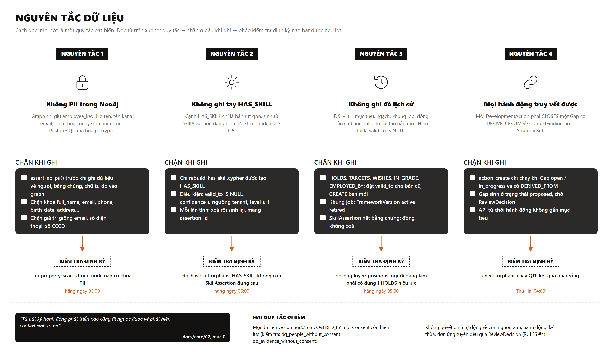
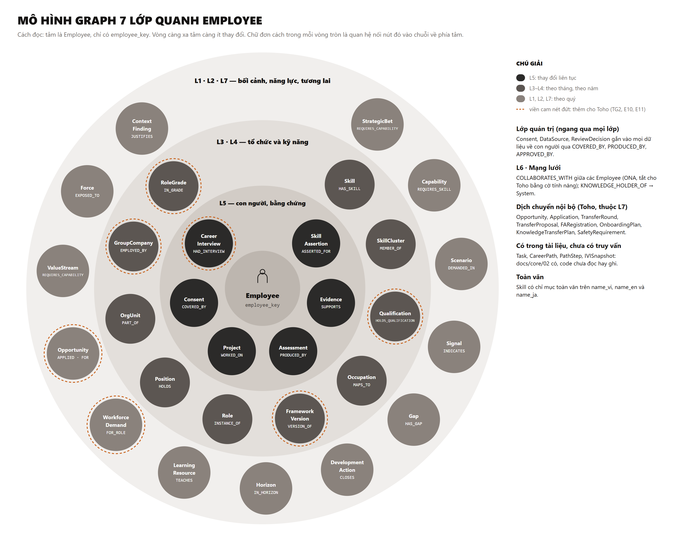
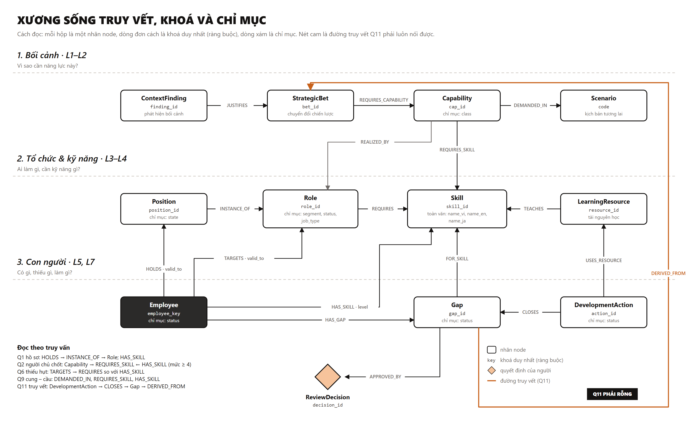
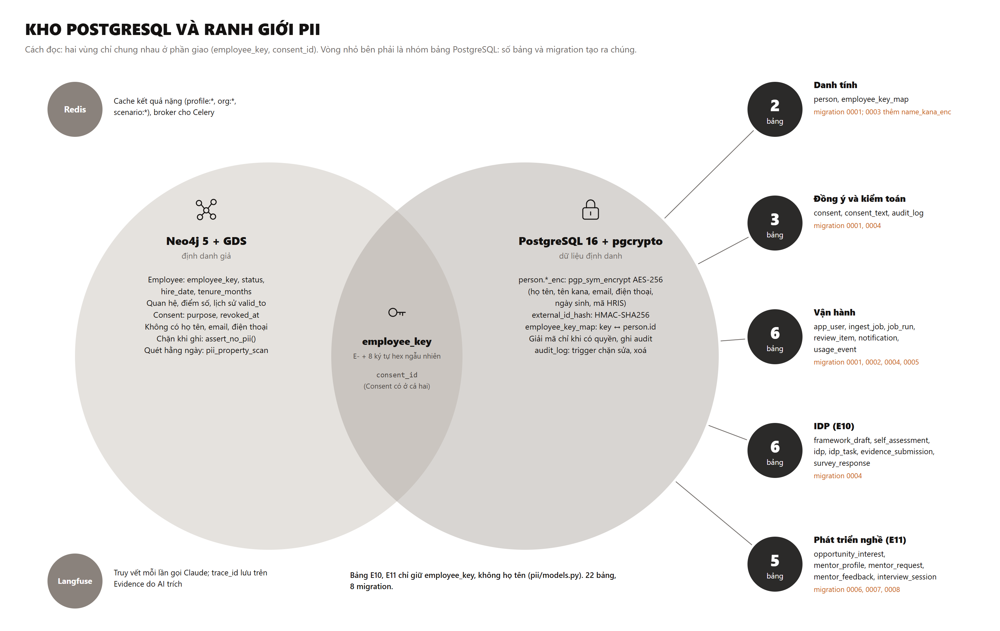
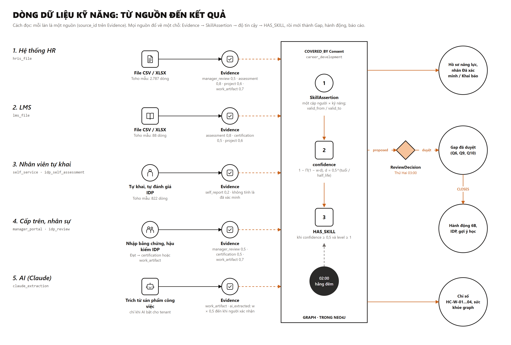
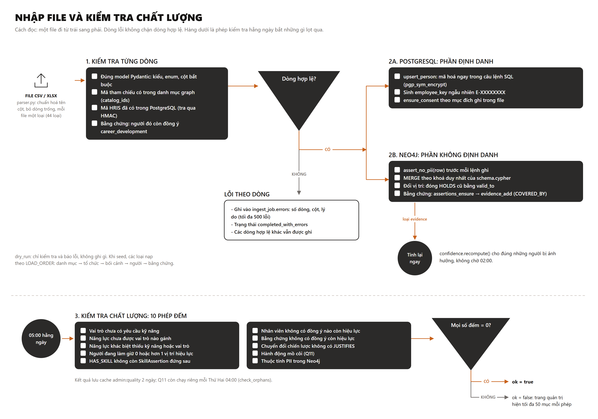
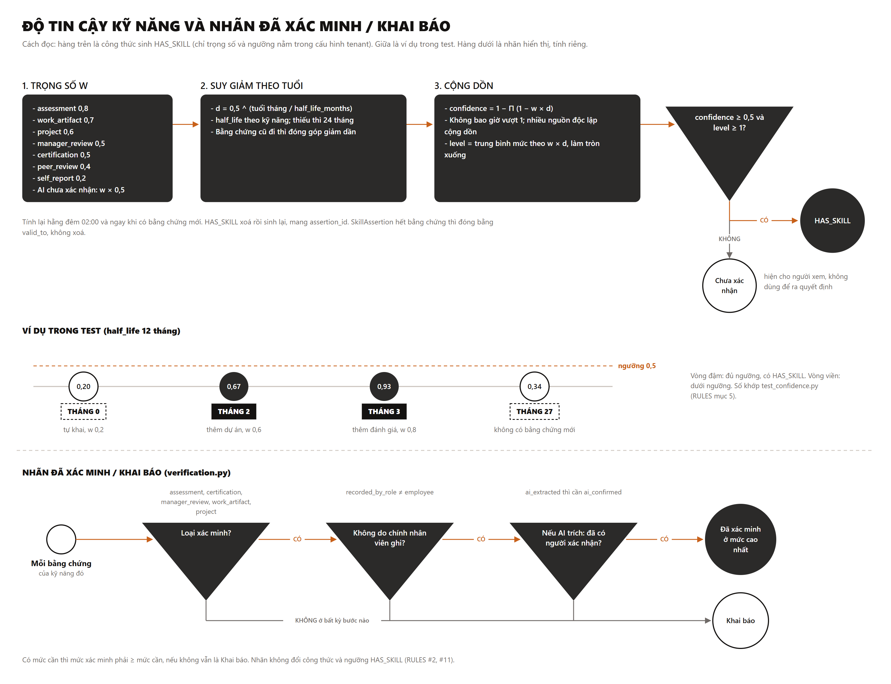
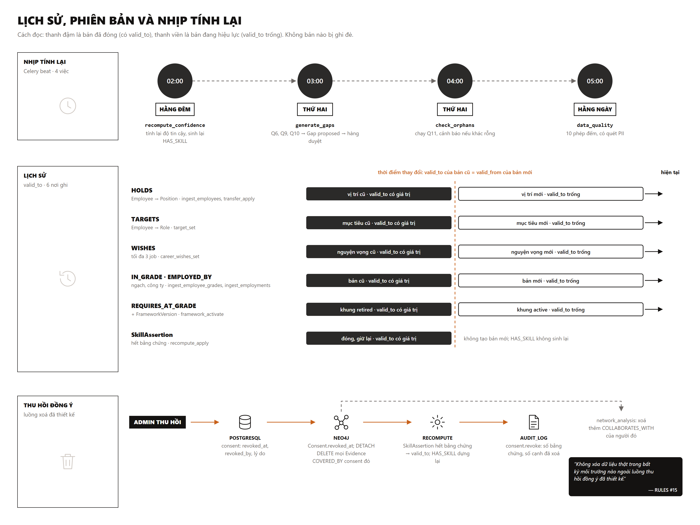
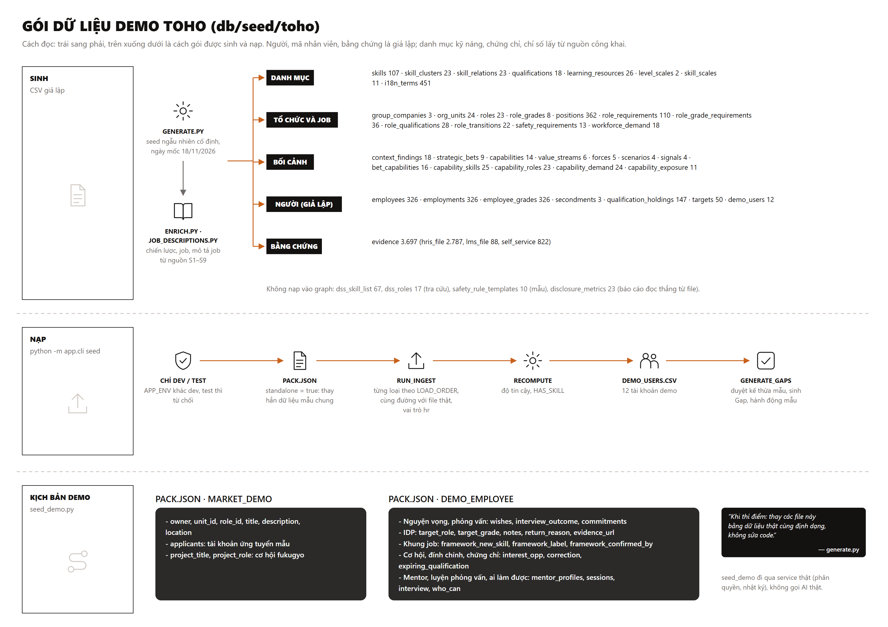

Kiến trúc dữ liệu — Talent Flow
Ngày 23/11/2026. Tài liệu mô tả dữ liệu đang có trong code: graph Neo4j, kho PostgreSQL, đường dữ liệu đi từ nguồn tới chỉ số. Mỗi mục có hình trước, chữ ngắn sau và dòng Nguồn ghi file thật. Khi tài liệu cũ và code khác nhau, tài liệu này theo code và ghi chỗ lệch ở mục 10. Hình sinh bằng python tools/diagrams/specs/du_lieu.py rồi xuất PNG bằng node tools/diagrams/render_svg.mjs docs/kien-truc/img docs/kien-truc/img/dl-*.svg (bộ xuất có dò chữ chồng, chữ tràn). Sửa nội dung hình ở file spec, không sửa SVG bằng tay. Tên node, quan hệ, bảng, tệp giữ tiếng Anh.
Mục lục
- Nguyên tắc dữ liệu
- Mô hình graph 7 lớp
- Xương sống truy vết, ràng buộc và chỉ mục
- Kho PostgreSQL và ranh giới PII
- Dòng dữ liệu từ nguồn tới kết quả
- Nhập file và kiểm tra chất lượng
- Độ tin cậy kỹ năng, Đã xác minh / Khai báo
- Lịch sử, phiên bản, nhịp tính lại, thu hồi đồng ý
- Dữ liệu demo Toho
- Điểm lệch giữa tài liệu và code
1. Nguyên tắc dữ liệu

Bốn quy tắc bất biến, mỗi quy tắc có hai lớp giữ: chặn khi ghi và đếm lại định kỳ.
| Quy tắc | Chặn khi ghi | Kiểm tra định kỳ |
|---|
| Không PII trong Neo4j | assert_no_pii() chặn khoá PII (full_name, email, phone, birth_date…) và giá trị giống email, điện thoại, CCCD | pii_property_scan, hằng ngày 05:00 |
Không ghi tay HAS_SKILL | Chỉ rebuild_has_skill.cypher tạo cạnh này | dq_has_skill_orphans, hằng ngày 05:00 |
| Không ghi đè lịch sử | Đóng bản cũ bằng valid_to, tạo bản mới (xem mục 8) | dq_employee_positions, hằng ngày 05:00 |
| Mọi hành động truy vết được | action_create.cypher chỉ tạo khi Gap open/in_progress và có DERIVED_FROM | Q11 qua check_orphans, Thứ Hai 04:00; Q11 cũng nằm trong 10 phép đếm hằng ngày |
Hai quy tắc đi kèm: mọi dữ liệu về người có COVERED_BY một Consent còn hiệu lực; Gap, hành động, kế thừa, đơn ứng tuyển đều qua ReviewDecision.
Nguồn: RULES.md mục 2 và 4, CLAUDE.md, backend/app/domain/pii_guard.py, backend/app/services/quality.py, backend/app/graph/queries/rebuild_has_skill.cypher, action_create.cypher, q11_orphan_actions.cypher, backend/app/tasks/schedule.py.
2. Mô hình graph 7 lớp

Tâm là Employee, chỉ mang employee_key và thuộc tính không định danh (status, hire_date, tenure_months, planned_exit). Mỗi vòng tròn nút ghi tên nhãn và quan hệ nối nó vào chuỗi về phía tâm.
| Vòng | Lớp | Nhãn đang dùng trong code | Thêm cho Toho (viền cam) |
|---|
| Trong | L5 con người, bằng chứng | SkillAssertion, Evidence, Assessment, Project, Consent | CareerInterview |
| Giữa | L3 tổ chức, L4 kỹ năng | Position, Role, OrgUnit, Skill, SkillCluster, Occupation | GroupCompany, RoleGrade, Qualification, FrameworkVersion, LevelScale |
| Ngoài | L1 bối cảnh, L2 năng lực, L7 tương lai | ContextFinding, StrategicBet, ValueStream, Force, Scenario, Signal, Capability, Gap, DevelopmentAction, Horizon, LearningResource | WorkforceDemand, Opportunity, Application, TransferRound, TransferProposal, FARegistration, OnboardingPlan, KnowledgeTransferPlan, SafetyRequirement |
| Ngang | Quản trị | Consent, DataSource, ReviewDecision | — |
| — | L6 mạng lưới | COLLABORATES_WITH, KNOWLEDGE_HOLDER_OF → System | ONA tắt cho Toho (config/tenants/toho.json) |
Có trong docs/core/02 nhưng chưa có truy vấn nào đọc hay ghi: Task, CareerPath, PathStep, IVISnapshot.
Nguồn: docs/core/02-workforce-graph-architecture.md mục 1–3, db/schema.cypher, nhãn và quan hệ quét từ backend/app/graph/queries/*.cypher, config/tenants/toho.json.
3. Xương sống truy vết, ràng buộc và chỉ mục

Đường quan trọng nhất của graph: chiến lược sinh yêu cầu năng lực, năng lực sinh yêu cầu kỹ năng, so với kỹ năng có bằng chứng của từng người để ra Gap, rồi hành động lấp Gap. Nét cam DERIVED_FROM là điều kiện của Q11: thiếu nó thì hành động thành "mồ côi".
Ràng buộc và chỉ mục (db/schema.cypher, áp dụng khi API khởi động qua backend/app/graph/migrate.py, chạy lại được nhờ IF NOT EXISTS):
| Loại | Số | Gồm |
|---|
| Khoá duy nhất | 44 | 29 của lõi (vd. employee_key, skill_id, assertion_id, gap_id), 12 của Toho (company_id, grade_id, qual_id, opp_id, app_id…), I18nTerm.vi, 2 của E10 (LevelScale.scale_id, FrameworkVersion.version_id) |
| Chỉ mục thuộc tính node | 14 | Employee.status, Role.segment/status/job_type, Position.state, Capability.class, Gap.status, DevelopmentAction.status, SkillAssertion.valid_to, Evidence.type, OrgUnit.company_id, Opportunity.status, Application.status, FrameworkVersion(role_id, status) |
| Chỉ mục quan hệ | 5 | HOLDS.valid_to, EMPLOYED_BY.valid_to, HOLDS_QUALIFICATION.expires_at, HAS_SKILL.level, REQUIRES_AT_GRADE.grade_id |
| Toàn văn | 2 | skill_names (name_vi, name_en), skill_names_ja (name_ja) |
Chỉ mục trên valid_to phục vụ điều kiện "đang hiệu lực" (valid_to IS NULL) có trong hầu hết truy vấn Q1–Q10.
| Truy vấn | Đọc đường nào |
|---|
| Q1 hồ sơ | HOLDS → INSTANCE_OF → Role; HAS_SKILL |
| Q2 người chủ chốt | Capability → REQUIRES_SKILL ← HAS_SKILL (mức ≥ 4) |
| Q6 thiếu hụt cá nhân | TARGETS (đang hiệu lực) → REQUIRES, so với HAS_SKILL |
| Q9 cung – cầu | DEMANDED_IN, REQUIRES_SKILL, HAS_SKILL |
| Q11 truy vết | DevelopmentAction → CLOSES → Gap → DERIVED_FROM → ContextFinding hoặc StrategicBet |
Nguồn: docs/core/02 mục 1, 5, 6, 9; db/schema.cypher; db/queries.cypher; backend/app/graph/queries/q01…q11_*.cypher.
4. Kho PostgreSQL và ranh giới PII

Hai kho chỉ chung nhau employee_key (dạng E- + 8 ký tự hex ngẫu nhiên, new_employee_key()), và consent_id vì Consent có ở cả hai bên: PostgreSQL giữ bản đầy đủ (người thu hồi, lý do), Neo4j giữ purpose, revoked_at để lọc khi truy vấn.
- Mã hoá: cột
*_enc của person mã hoá ngay trong câu lệnh SQL bằng pgp_sym_encrypt (AES-256, s2k-mode=1). Mã HRIS tra lại qua external_id_hash (HMAC-SHA256), không lưu dạng rõ. - Giải mã: chỉ khi người xem có quyền, tầng gọi phải ghi audit (
display_names()). - Nhật ký:
audit_log chỉ thêm; trigger audit_log_no_update chặn UPDATE và DELETE. - Bảng của E10, E11 chỉ giữ
employee_key, không giữ họ tên.
| Nhóm | Bảng | Migration |
|---|
| Danh tính | person, employee_key_map | 0001; 0003 thêm name_kana_enc |
| Đồng ý, kiểm toán | consent, consent_text, audit_log | 0001, 0004 |
| Vận hành | app_user, ingest_job, job_run, review_item, notification, usage_event | 0001, 0002, 0004, 0005 |
| IDP (E10) | framework_draft, self_assessment, idp, idp_task, evidence_submission, survey_response | 0004 |
| Phát triển nghề (E11) | opportunity_interest, mentor_profile, mentor_request, mentor_feedback, interview_session | 0006, 0007, 0008 |
Tổng 22 bảng, 8 migration. Redis giữ cache kết quả nặng (profile:*, org:*, scenario:*) và làm broker cho Celery; Langfuse giữ vết mỗi lần gọi Claude, trace_id lưu trên Evidence do AI trích.
Nguồn: backend/app/pii/models.py, backend/app/pii/repository.py, db/postgres/migrations/versions/0001_initial.py … 0008_interview_practice.py, docs/core/02 mục 7.2, backend/app/services/confidence.py (xoá cache).
5. Dòng dữ liệu từ nguồn tới kết quả

Mọi nguồn đi chung một hàm add_evidence_rows(): tạo SkillAssertion nếu cặp người × kỹ năng chưa có, thêm Evidence nối SUPPORTS và COVERED_BY Consent career_development. Không có đồng ý thì không ghi.
| Làn | source_id | Loại bằng chứng | Toho mẫu |
|---|
| Hệ thống HR (file) | hris_file | manager_review, assessment, project, work_artifact | 2.787 dòng |
| LMS (file) | lms_file | assessment, certification, project | 88 dòng |
| Nhân viên tự khai | self_service, idp_self_assessment | self_report | 822 dòng |
| Cấp trên, nhân sự | manager_portal, idp_review | theo màn hình nhập; hậu kiểm IDP Đạt → certification (task có học liệu) hoặc work_artifact | sinh khi dùng |
| AI (Claude) | claude_extraction | work_artifact, ai_extracted = true | không có trong mẫu |
Kết quả đi ra: hồ sơ và nhãn Đã xác minh / Khai báo; Gap từ Q6, Q9, Q10 ở trạng thái proposed chờ duyệt (Thứ Hai 03:00); hành động 6B, IDP; chỉ số vốn con người HC-W-01…04 tự tính từ graph (portfolio.disclosure()).
Nguồn: backend/app/ingest/service.py (add_evidence_rows, _evidence), backend/app/api/v1/employees.py, backend/app/services/idp.py (submit_assessment, review_decide), backend/app/services/gaps.py, backend/app/services/portfolio.py, backend/app/graph/queries/evidence_add.cypher, assertions_ensure.cypher, đếm db/seed/toho/evidence.csv theo cột source_id.
6. Nhập file và kiểm tra chất lượng

- Đọc file: CSV (UTF-8, có BOM cũng được) hoặc XLSX; tên cột chuẩn hoá về chữ thường, gạch dưới; bỏ dòng trống. Mỗi file là một trong 44 loại (
SPECS). - Kiểm tra từng dòng: model Pydantic; mã tham chiếu có trong danh mục graph; mã HRIS đã có trong PostgreSQL; riêng bằng chứng phải còn đồng ý
career_development. Dòng lỗi ghi vào ingest_job.errors (tối đa 500), dòng hợp lệ vẫn được ghi. dry_run chỉ kiểm tra. - Ghi: phần định danh vào PostgreSQL trước (mã hoá, sinh
employee_key, đồng ý), phần còn lại vào Neo4j bằng MERGE theo khoá duy nhất. Loại evidence tính lại độ tin cậy ngay cho người bị ảnh hưởng. - Kiểm tra hằng ngày 05:00: 10 phép đếm (9 trong
CHECKS + quét PII), ok = true khi mọi số đếm bằng 0. Kết quả lưu cache admin:quality 2 ngày, mỗi phép hiện tối đa 50 mục.
Nguồn: backend/app/ingest/parser.py, backend/app/ingest/service.py (validate_rows, run_ingest, SPECS, LOAD_ORDER), backend/app/ingest/rows.py, backend/app/pii/repository.py (upsert_person, ensure_consent), backend/app/services/quality.py, backend/app/graph/queries/dq_*.cypher, pii_property_scan.cypher.
7. Độ tin cậy kỹ năng, Đã xác minh / Khai báo

d_i = 0,5 ^ (tuổi_bằng_chứng_tháng / half_life_months) (thiếu half_life thì 24 tháng)
confidence = 1 − Π (1 − w_i × d_i)
level = trung bình mức theo w_i × d_i, làm tròn xuống
HAS_SKILL khi SkillAssertion đang hiệu lực, confidence ≥ ngưỡng tenant (0,5) và level ≥ 1
- Trọng số nằm trong cấu hình tenant (
evidence_weights); Toho dùng cùng giá trị với lõi: assessment 0,8 · work_artifact 0,7 · project 0,6 · manager_review 0,5 · certification 0,5 · peer_review 0,4 · self_report 0,2. Bằng chứng AI chưa có người xác nhận nhân ai_extracted_factor 0,5. - Ví dụ trong test (half_life 12 tháng): tự khai 0,20 → thêm dự án 0,67 → thêm đánh giá 0,93 → 27 tháng không có bằng chứng mới còn 0,34.
- Đã xác minh / Khai báo là nhãn hiển thị, tính riêng, không đổi công thức. Một kỹ năng Đã xác minh ở mức L khi có bằng chứng mức ≥ L thuộc loại xác minh (assessment, certification, manager_review, work_artifact, project), không do chính nhân viên ghi (
recorded_by_role ≠ employee), và nếu do AI trích thì đã có người xác nhận. Có mức cần thì mức xác minh phải đạt mức cần.
Nguồn: backend/app/domain/confidence.py, backend/app/services/confidence.py, backend/app/domain/verification.py, backend/app/tenant.py, config/tenants/toho.json, backend/tests/unit/test_confidence.py, backend/app/graph/queries/recompute_load.cypher, recompute_apply.cypher, rebuild_has_skill.cypher.
8. Lịch sử, phiên bản, nhịp tính lại, thu hồi đồng ý

Nhịp tính lại (Celery beat, giờ Asia/Ho_Chi_Minh): 02:00 hằng đêm recompute_confidence; Thứ Hai 03:00 generate_gaps; Thứ Hai 04:00 check_orphans; 05:00 hằng ngày data_quality. Lịch nằm một chỗ ở tasks/schedule.py, dùng chung cho beat và trang Nhịp vận hành.
Lịch sử: sáu nơi ghi theo kiểu đóng bản cũ, mở bản mới, hiện tại là valid_to IS NULL:
| Quan hệ / node | Ghi ở | Ghi chú |
|---|
HOLDS | ingest_employees, transfer_apply | điều chuyển ghi thêm via = mã đề xuất |
TARGETS | target_set | Q6 chỉ đọc bản đang hiệu lực |
WISHES | career_wishes_set | tối đa 3 job, có thứ hạng |
IN_GRADE, EMPLOYED_BY | ingest_employee_grades, ingest_employments | đổi ngạch, đổi công ty trong tập đoàn |
REQUIRES_AT_GRADE + FrameworkVersion | framework_activate | phiên bản khung job: bản cũ retired, bản mới active, ghi người xác nhận và ngày |
SkillAssertion | recompute_apply | hết bằng chứng thì đóng, không tạo bản mới |
HAS_SKILL không phải lịch sử: là bản rút gọn, xoá và sinh lại mỗi lần tính.
Thu hồi đồng ý: PostgreSQL ghi revoked_at, người thu hồi, lý do → Neo4j đặt Consent.revoked_at và DETACH DELETE mọi Evidence COVERED_BY đồng ý đó (mục đích network_analysis xoá thêm COLLABORATES_WITH) → tính lại: SkillAssertion hết bằng chứng bị đóng bằng valid_to → ghi audit_log hành động consent.revoke.
Nguồn: backend/app/tasks/schedule.py, backend/app/tasks/celery_app.py, backend/app/services/consent.py, backend/app/graph/queries/ingest_employees.cypher, transfer_apply.cypher, target_set.cypher, career_wishes_set.cypher, ingest_employee_grades.cypher, ingest_employments.cypher, framework_activate.cypher, recompute_apply.cypher, consent_revoke.cypher, consent_revoke_network.cypher; RULES.md #3, #15.
9. Dữ liệu demo Toho

- Sinh:
generate.py (seed ngẫu nhiên cố định, ngày mốc 18/11/2026) ghép thêm enrich.py và job_descriptions.py (chiến lược, job, mô tả job từ nguồn công khai S1–S9 của docs/toho-gas/12). Người, mã nhân viên, bằng chứng là giả lập; danh mục kỹ năng DSS, chứng chỉ, chỉ số lấy từ nguồn công khai. - Nạp:
python -m app.cli seed chỉ chạy khi APP_ENV là dev hoặc test. pack.json có standalone: true nên gói Toho thay hẳn dữ liệu mẫu chung. Mỗi file đi qua run_ingest theo LOAD_ORDER, cùng đường với file thật, vai trò hr. Sau đó: tính lại độ tin cậy, tạo 12 tài khoản từ demo_users.csv, duyệt đề cử kế thừa mẫu, sinh Gap, hành động mẫu. - Kịch bản demo:
pack.json có hai khối. market_demo mô tả một cơ hội tuyển nội bộ và người ứng tuyển mẫu. demo_employee mô tả một nhân viên đi qua mọi tình huống: nguyện vọng và buổi trao đổi, IDP, đổi khung job, cơ hội, đính chính, chứng chỉ sắp hết hạn, mentor, luyện phỏng vấn, "ai làm được" (who_can có cả bằng chứng xác minh và chỉ khai báo). seed_demo.py chạy các bước qua service thật, không gọi AI thật. - Không nạp vào graph:
dss_skill_list.csv, dss_roles.csv (tra cứu), safety_rule_templates.csv (mẫu sinh safety_requirements.csv), disclosure_metrics.csv (báo cáo đọc thẳng từ file).
Số dòng trong hình đếm bằng csv.reader ngày 23/11/2026 (roles.csv có ô nhiều dòng nên đếm theo dòng văn bản sẽ sai).
Nguồn: db/seed/toho/generate.py, enrich.py, job_descriptions.py, pack.json (chỉ đọc khoá), backend/app/cli.py, backend/app/seed_demo.py, docs/toho-gas/08-CATALOGS.md, docs/toho-gas/12-NGUON-DU-LIEU-GRAPH.md.
10. Điểm lệch giữa tài liệu và code
Code là nguồn đúng. Các điểm dưới đây cần chủ dự án xác nhận hoặc cập nhật tài liệu gốc.
| # | Tài liệu nói | Code làm | Đề xuất |
|---|
| 1 | HAS_SKILL khi confidence ≥ 0.5 (docs/core/02 4.3, CLAUDE.md) | Thêm điều kiện level ≥ 1; ngưỡng lấy từ confidence_threshold của tenant | Ghi bổ sung vào docs/core/02 |
| 2 | Nhịp có chụp IVISnapshot hằng tháng, ONA và cụm kỹ năng ẩn hằng tháng, rà L1–L2 hằng quý (docs/core/02 4.4) | schedule.py chỉ có 4 tác vụ, không có IVI, ONA | Hợp với Toho (IVI, ONA tắt); ghi rõ là chưa làm ở lõi |
| 3 | Lịch chạy "hằng đêm" | Giờ Asia/Ho_Chi_Minh (UTC+7); Toho ở Nhật (UTC+9), 02:00 giờ Việt Nam là 04:00 giờ Nhật | Xác nhận có cần đổi múi giờ theo tenant |
| 4 | ARCHITECTURE.md 4.1: file nhân viên kèm Evidence → SkillAssertion | File employees chỉ tạo Employee, HOLDS, Consent; bằng chứng là loại file riêng (evidence) | Cập nhật ARCHITECTURE.md |
| 5 | Task, CareerPath, PathStep, IVISnapshot trong từ điển node | Không truy vấn nào đọc hay ghi; schema có khoá duy nhất cho Task, CareerPath, IVISnapshot | Đánh dấu "chưa dùng" trong docs/core/02 |
| 6 | RULES.md mục 4: mọi MERGE dựa trên khoá duy nhất đã khai báo | KnowledgeTransferPlan MERGE theo plan_id và FAInvite tạo theo invite_id, cả hai chưa có ràng buộc trong schema.cypher | Thêm 2 ràng buộc |
| 7 | RULES.md #15: chỉ xoá dữ liệu thật trong luồng thu hồi đồng ý | Còn evidence_delete_rejected_ai (xoá bằng chứng AI bị người duyệt bác, chưa xác nhận) | Xác nhận đây là ngoại lệ có chủ ý, ghi vào RULES.md |
| 8 | pii_guard.py: dùng trước mọi lệnh ghi graph từ dữ liệu nhập | 30 loại danh mục ghi qua _simple không gọi assert_no_pii; phép quét hằng ngày chỉ kiểm tên khoá thuộc tính, không kiểm giá trị | Cân nhắc quét giá trị cho chữ tự do (mô tả job, phát hiện bối cảnh) |
| 9 | schema.cypher xếp 4 chỉ mục node (orgunit_company, role_job_type, opportunity_status, application_status) dưới tiêu đề "Chỉ mục quan hệ" | Đúng là chỉ mục thuộc tính node | Chỉ sửa chú thích |
| 10 | 08-CATALOGS.md: 87 kỹ năng, 5 job PoC; cli.py: "~250 người" | Gói hiện có 107 kỹ năng, 23 job, 326 dòng employees.csv (theo 12-NGUON-DU-LIEU-GRAPH.md sau làm giàu) | Cập nhật số trong 08-CATALOGS.md và chú thích cli.py |